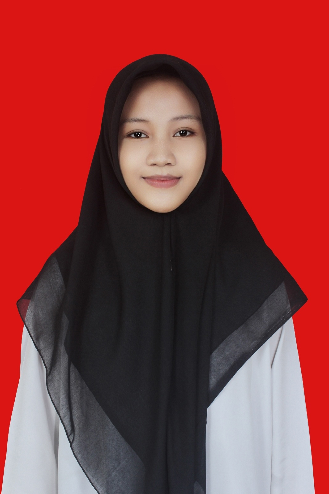

Mahasiswi Baru Teknik Informatika dengan minat besar di bidang Teknologi & Desain Grafis

Halo! Saya Nadia Puteri, Mahasiswi baru yang memiliki minat di dunia teknologi, Desain Grafis, dan eksplorasi ide kreatif. Saya lulusan Pondok Pesantren Rasyidiyah Khalidiyah Amuntai. Aktif berpartisipasi dalam kompetisi akademik & non-akademik dan memiliki pengalaman berorganisasi yang mumpuni. Memiliki minat di bidang Teknik Informatika, Khususnya pada Software Development, Cyber Security serta Smart Automation. Memiliki keterampilan dasar Microsoft Office dan Desain Grafis.